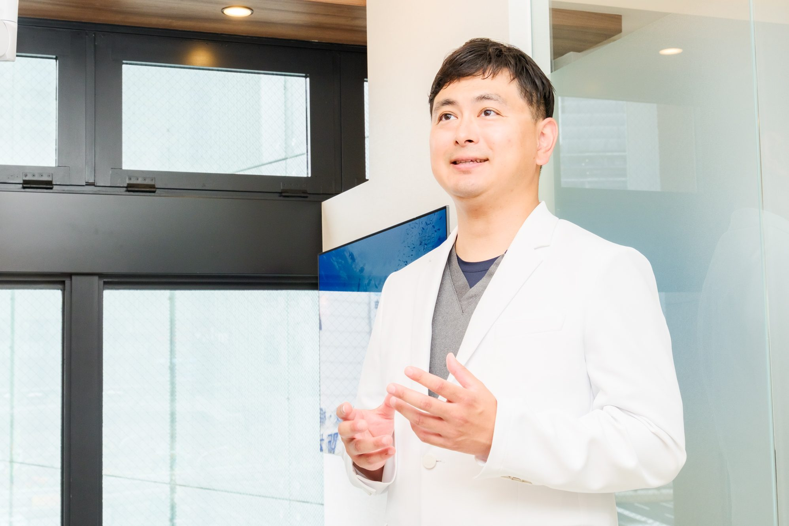
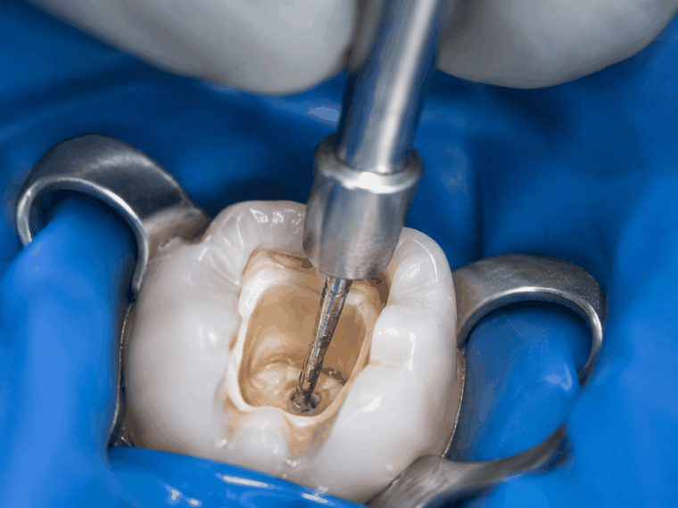
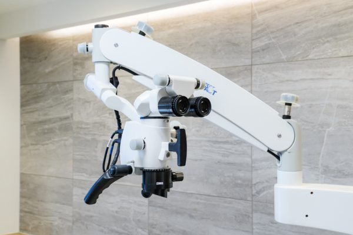
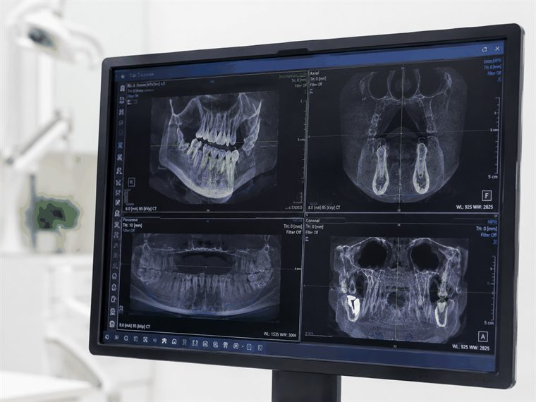
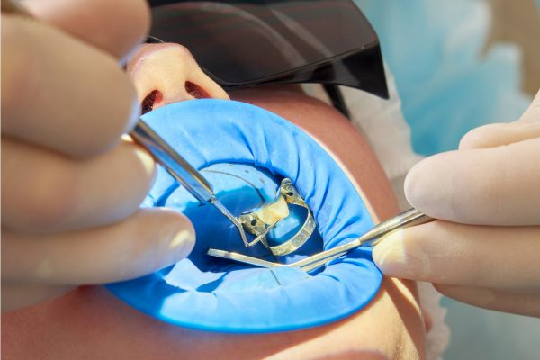

「抜くしかない」に
納得できない
抜く前に、検査で確かめます。
残す場合と抜く場合の違いも、検査の結果とあわせてご説明します。

神戸三宮の歯医者「神戸三宮アステオ歯科」｜歯を抜く前のご相談・セカンドオピニオン｜JR三ノ宮駅西口から徒歩30秒
一度抜いた歯は、元に戻せません。当院では抜く前に、根の治療（根管治療）で歯を残せるかを検査します。治療を受けるかは、結果を聞いてから決められます。
紹介状・レントゲンがなくても受診できます
他院で抜歯と言われた方へ
「抜くしかない」と
言われた歯でも、
残せる場合があります
当院には、次のようなご相談が多く寄せられます。
抜く前に、検査で確かめます。
残す場合と抜く場合の違いも、検査の結果とあわせてご説明します。
歯を残せれば、手術は不要です。
歯を残す治療とインプラントの違いは、下の比較表にまとめています。
根の治療のやり直しで
改善する場合があります。
何度治療した歯でも、それだけを理由に抜歯と決まるわけではありません。

抜歯は、やり直しができない処置です
「残せたかもしれない」と
分かってからでは、戻せません

※根管治療の費用と期間が余分にかかります。
※どちらが優れているかではなく、順番の違いです。
インプラント・ブリッジ・入れ歯は、いずれも失った歯の働きを補う治療として広く行われています。歯を残す治療との違いは、歯を抜いたあとに行う治療だという点です。
当院では、まず歯を残せるかどうかの検査から始めます。抜いたほうがよいと分かった場合は、その理由をご説明します。確かめないまま抜くことだけは、避けていただきたいと考えています。
歯を失ったときに比べられるインプラント・ブリッジ・入れ歯に、
歯を抜く前に受けられる「歯を残す治療（根管治療）」を加えて比べます。
| 歯を抜く前歯を残す治療 | 歯を抜いたあとインプラント | 歯を抜いたあとブリッジ | 歯を抜いたあと入れ歯 | |
|---|---|---|---|---|
| 費用 | 1歯 44,000〜198,000円 （税込・自由診療）＋処置料 |
提携先でご案内 | 保険適用 | 保険適用 |
| 通院の目安 | 3〜4回・1〜2か月 | 骨の状態による | 2〜4週間 | 2〜4週間 |
| 手術 | なし | あり（骨に人工歯根） | 抜歯のみ | 抜歯のみ |
| 隣の歯 | 削らない | 削らない | 両隣を削る | バネの歯に負担 |
| あとから変更 | できる | 残す治療へは不可 | 残す治療へは不可 | 残す治療へは不可 |
| 注意点 | 歯の状態によっては、治療をしても残せない場合があります。被せ物と土台の費用は別にかかります。 | 骨の量が足りない場合は、骨を補う処置が必要になることがあります。治療後も定期的な管理が必要です。 | 支えにする両隣の歯に負担がかかります。清掃がしにくく、支えの歯がむし歯・歯周病になることがあります。 | 慣れるまでに時間がかかることがあります。毎日の取り外しと清掃が必要です。 |

ROOT CANAL TREATMENT
精密根管治療
こう言われた場合も
根管治療のことです
「神経を取りましょう」
「根の先に膿があります」
「根に黒い影があります」
根管治療（こんかんちりょう）は、歯の根の中の感染した部分を取り除いて、
歯を抜かずに残すための治療です。
以前に神経を取った歯も、やり直せる場合があります
神経を取った歯が、あとで痛んだり、歯ぐきが腫れたり、膿が出たりすることがあります。原因の一つは、前回の治療で取り切れなかった細菌が根の中に残っていることです。根の中の治療をやり直すと、症状が改善することがあります。
何度治療した歯でも、それだけを理由に抜歯と決まるわけではありません。やり直せるかどうかは、根の中と周りの骨の状態を検査して判断します。

マイクロスコープ
肉眼では見えない根の中を拡大し、以前の治療で見つかっていなかった根管も探しながら治療します。

歯科用CT
治療の前に撮影し、根の本数と形、膿の広がり、歯を支える骨の状態を立体的に確認します。

ラバーダム
ゴムのシートで歯を覆い、唾液に含まれる細菌が根の中に入るのを防ぎます。
すべての歯を残せるわけではありません。検査で判断します。
こんな歯です
※当てはまっても、必ず残せるとは限りません。
根の中と骨の状態を検査して判断します。
こんな歯です
※抜いたほうがよいことをはっきりお伝えし、インプラント・ブリッジ・入れ歯のどれが適しているかをご説明します。インプラントをご希望の方には、提携先の歯科医院をご紹介します。
次のようなご希望の方も、ご相談ください